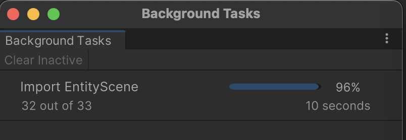

개요
유니티엔 2가지 방식의 개발 패러다임을 제공한다. Mono(기본 방식), DOTS 이다.
두 방식은 씬 파일의 활용 방법과 씬 시스템, 씬 파일 구조등 대부분의 씬관련 구조가 다르다.
차이점을 비교해보고 장단점을 정리해보겠다.
씬에 대한 얘기이지만 자연스레 Mono vs DOTS의 비교가 될 수 밖에 없는 점은 감안해야 한다.
용어 정리
Entity Scene(DOTS Scene)
- DOTS 환경에서 사용하는 씬. 일반 씬을 Baking해 생성한다.
- Unity Editor에서 보이는
Import EntityScene작업이 바로 이것이다.- 
- *.entities, *.entityheader 형식의 파일들로 구성된다.
Mono Scene(일반 Scene)
- 일반 유니티의 씬을 나타냄. *.unity 형식이다.
- Mono Scene이란 용어는 공식 용어가 아니다. 일반 유니티 개발 방식과 DOTS 개발 방식을 구분하기에 Mono / DOTS로 구분하는게 명확하고 편리해 개인적으로 사용중이다.
- DOTS의 SubScene을 연결할 때에도 Mono Scene을 연결해 사용한다.
SubScene과 Entity Scene은 다른 것.
- SubScene은 Entity Scene을 불러오기 위해 사용하는 컴포넌트. 메인(Mono) Scene에서 DOTS용 Scene을 하위로 연결하는 구조.
- 이 DOTS용 Scene은 후에 Baking 과정을 거쳐 Entity Scene 형식으로 만들어져 사용된다.
Serialization(직렬화)
Mono Scene
유니티 엔진 코어가 에디터의 변경점들을 직렬화해 씬 파일에 저장한다.
이 과정의 코드를 일반 유저는 볼 수 없으며 디버깅 및 수정이 불가하다.
Mono Scene은 텍스트 Serialization이 가능하며 yaml 포맷으로 되어 있어 사람이 읽고 수정할 수 있다. 이를 바탕으로 버전 컨트롤 충돌 해결과 씬 데이터를 파싱해 추가적인 툴링을 구현하는 등 다양한 처리를 할 수 있다.
Entity Scene
Entity Scene은 Mono Scene을 가지고 만들어내는 추가 데이터이다.
원본 Source가 Mono Scene이란 뜻이다. 일반적으로는 Mono Scene 없이는 Entity Scene도 없다.
원본 Mono Scene이 변경되면 당연히 Entity Scene도 dirty해지며 다시 Baking해야 한다.
Entity Scene은 컴파일된 상태를 기반으로 Type DB를 구축하고, 그 Type DB로 ArcheType을 구현, ArcheType을 가지고 Chunk를 구현, 이 Chunk 자체가 파일 데이터가 되기 때문에 소스코드가 변경되면 연쇄적으로 파일 데이터까지 무효화되어 새로 Entity Scene을 Baking해야 된다.
예로 DOTS에서는 Component의 타입을 숫자 Index로 표현할 수 있는데, 소스코드가 변경되어 Component가 추가/삭제/변경된다면 기존의 Component의 Index는 사용할 수 없어 새로운 Component Index를 발급해야 된다. 이 Component Index가 Type DB에서 사용되는 데이터이다.
- Source Code ← Type DB ← ArcheType ← Chunk
이를 직접적으로 느낄 수 있는 상황이 에디터에서 테스트를 하다가 DOTS System이나 Component를 수정후 다시 플레이하면 SubScene을 다시 Import 하는 상황이다. 소스코드를 변경하지 않았다면 이미 Import된 SubScene의 Entity Scene을 그대로 사용했을 것이다.
그런 면에서 DOTS의 iteration은 좋지 않다. 그나마 비동기 및 병렬 처리와 빠른 로딩속도가 있어서 할만하다.
Entity Scene은 바이너리 포맷으로 저장된다. 사람이 읽을 수 없으며 충돌 해결이 불가하다.
Deserialization(역직렬화)
역직렬화의 목적은 씬을 로딩하는 것이기 때문에 씬 로딩까지 포함해 설명한다.
Mono Scene
일반씬은 일반적인 프로그램의 데이터 파일과 크게 다르지 않다.
일반적으로는 Serialization 형식을 Text로 사용하고, 이 경우에도 엔진이 텍스트 자체를 읽어들여 파싱하며 사용하진 않고 즉시 사용에 용이한 형식의 바이너리 파일로 변환해 Library/ 에 캐시해 사용할 것이다.
텍스트든 바이너리든, 씬 파일의 내용물 자체를 게임 엔진에서 바로 GameObject등의 객체로 즉시 사용할 수 없다. 그래서 씬 파일을 읽어들여 계층적으로 객체를 생성하고 초기화하는 과정이 추가로 필요하다.
Entity Scene
Entity Scene은 바이너리 형식이며 DOTS 런타임이 읽어들여 거의 즉시 사용할 수 있는 구조이다.
DOTS에선 Entity와 Component를 Chunk라는 메모리에 저장하는데, 이 Chunk 여러개를 통째로 저장한 것이 Entity Scene인 것이다. 그러니까, Entity Scene을 읽으면 Chunk 여러개가 나오고, 그 Chunk를 World에 옮기면 씬이 로딩된 것이다. (물론 이것보단 훨씬 복잡하긴 하지만…)
이런 구조적인 차이 때문에 Mono Scene을 읽어들이는 것보다 Entity Scene을 읽어들이는 것이 매우 빠를 수 밖에 없다. 빠른 것 뿐만 아니라, 엔진 코어에 의존하지도 않는다. 앞서 일반씬 로딩시엔 엔진 코어의 객체 생성 및 관리를 받는다고 한 그 내용이다.
DOTS는 Entity/Component 데이터를 Native Memory를 사용하고, 씬을 로딩할 때에도 Manage Memory를 거의 사용하지 않는다. 따라서 씬 로딩시 GC에 부담을 거의 가하지 않는다.
씬 시스템 런타임 아키텍처
Mono는 앞서 말했듯이 유니티 엔진 코어를 기반으로 돌아가며, 월드를 1개만 유지할 수 있다. 쉽게 말해 프로그램 안에 2개 이상의 독립된 게임을 만들 수 없다는 뜻이다. 반면 DOTS는 모든 것이 World 단위로 구성되어 있고, World를 여러개를 유지할 수 있다. 특정 씬을 특정 World에만 불러올 수 있다.
그렇기에 DOTS가 Mono보다 훨씬 유연하고 확정성 있는 씬 시스템을 가진다. 그렇지만 많은 가능성과 기능을 제공한다는 것은 필연적으로 복잡도를 높이고 버그의 소지가 생긴다는 것을 의미하기도 한다. 특별한 요구사항이 없다면 대부분 Mono 기반 씬 시스템으로 충분하다. 유니티로 대부분의 게임 장르를 개발할 수 있다는 것을 보면 알 수 있다.
DOTS의 씬 시스템이 더 적합한 경우의 예시이다.
 Ml-Agent 프레임워크를 사용해 Training을 하는 환경(원문 링크)
Ml-Agent 프레임워크를 사용해 Training을 하는 환경(원문 링크)
ML-Agent는 Mono 전용이고, Mono 씬 시스템의 한계 때문에 논리적으로 분리되지 않은 학습 공간을 여러개 배치해두는 형태로 구성한다.
이 방식은 몇가지 문제가 있다. 학습 공간이 서로에게 독립적이지 않다보니, 이론상 학습 공간의 오브젝트간의 Interaction이 가능하다(버그 요인). 연관없는 오브젝트가 많아지면서 GameObject.Find()와 같은 쿼리 기능의 성능도 저하된다. Context 분리가 안되니 디버깅도 힘들 것이다.
반면 DOTS로 이런 학습 시스템을 만든다면 학습 공간을 별도의 World로 분리해서 만들어 여러개의 학습 World를 동시에 구동할 수 있을 것이다.
요약
일반씬의 장점/단점
장점
- 소스코드와 씬파일의 결합도가 낮다.
- 단순하고 쉽다.
- 씬 파일을 사람이 읽을 수 있으며 충돌 머지가 가능하다.
단점
- 유니티 엔진에 완전 의존한다.
- 일반적으로 소스코드를 볼 수 없고, 커스텀할 수 없으며, 디버깅 할 수 없다.
- 엔진 내부 병목 지점이 있는데 어쩔 도리가 없다.
- 씬 로딩/언로딩시 Managed Memory를 많이 할당 및 버리기 때문에 GC의 부담이 크다.
- 잦은 씬 로딩/언로딩은 GC Heap 단편화로 이어질 수 있다.
EntityScene의 장점/단점
장점
- 로딩이 굉장히 빠르다. - 파일 읽은 뒤 메모리 복사로 거의 끝남.
- 언로딩이 굉장히 빠르다. - 메모리 해제로 거의 끝남.
- Managed Memory 대신 Native Memory를 사용하기 때문에 GC 부하가 거의 없다.
- 대부분의 소스코드가 공개되어 있다. - 고칠 수 있으며 디버깅 가능하다.
- 엔진 독립적이다 - 유니티의 고질적인 리소스 관리 병목에서 어느정도 자유롭다.
- 모듈화되어 있다.
단점
- 에디터 Iteration이 느리다. 은근 자주 Re-import 해야 한다.
- 파일을 사람이 읽을 수 없으며 충돌 머지가 불가하다.
결론
현 시점(2024.01)의 Unity(2022.3.x)를 기준으로 봤을 때에는 어느 한쪽의 Scene 시스템이 우월하다고 할 수 없다.
프로젝트의 요구사항과 가진 리소스에 맞게 적절한 판단이 필요하다.